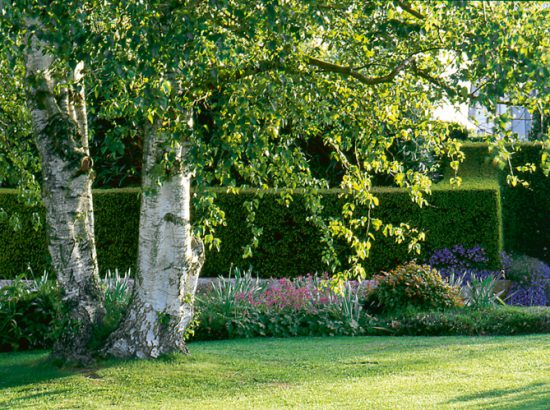
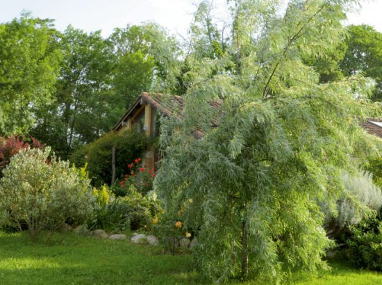
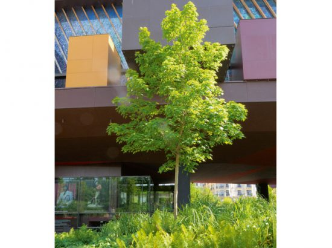

Le Bouleau
Les bouleaux d’Asie sont très recherchés pour leur écorce blanche, mais nos espèces Betula pubescens, ci-contre, et B. pendula sont dignes d’intérêt et de pousse rapide.
Les Saules
Les saules peuplent les bords de rivière de différentes espèces au feuillage argenté caduc. Leur bois souple et coloré, le jonc des vanniers, fut une richesse économique. Malgré le déclin de ces productions, les saules restent un élément de décor, en arbrisseaux, en haie ou en majesté avec Salix alba.
L’érable
Nos érables peuvent sembler un peu fades sous les feux des essences américaines et devant la grâce des japonaises. Ils sont pourtant de culture beaucoup plus facile et les seuls tolérants au calcaire.
